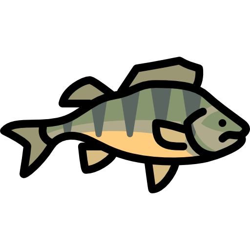

Työkokemus
Tutkimusavustaja
Husön biologinen asema, Kesäkuu 2020 - Syyskuu 2020
Altistuneiden rantojen kalakartoitus rantanuotalla.
Tehtäviin kuului kalastuksen suunnittelu, kalastus rantanuotalla,
saaliin analyysi ja tietojen kokoaminen ja raportoiminen. Tavoitteena oli
tutkia nokkakalan, kampelan ja kolmipiikin esiintyminen ja määrä Ahvenanmaan
vesillä.
Tutkimusavustaja

Husön biologinen asema, Kesäkuu 2019 - Elokuu 2019
Koekalastus järvissä EU-direktiivien mukaan.
Tehtäviin kuului koekalastuksen suunnittelu, kalastus verkolla, saaliin
analyysi ja tietojen kokoaminen ja raportoiminen. Työn aikana keräsin
näytteitä minun pro gradu-tutkielmani varten ja tein ahvenen ruokavalion
vertailu järvien kesken.
Korkeakoulunharjoittelija
Itä-uudenmaan ja Porvoonjoen vesien- ja ilmansuojeluyhdistys ry, Kesäkuu 2018 - Elokuu 2018
Tehtäviin kuului Mustijoen koeravstuksen suunnittelu,
suorittaminen ja raportoiminen. Sen sijaan osallistuin pilottitutkimuksessa
pohjanäytemenetelmistä. Sen lisäksi osallistuin Jokitalkkari-hankkeen
sähkökalastuksissa ja vesien kunnostaminen, ja yhdistyksen ympäristökasvatuksessa.

Muu työkokemus
- Assistentti Åbo Akademin laboratoriakurssissa (Biolaborationer 1)
- Metsän raivaaminen ja istutus, Eteläinen Metsäreviiri ry
- Apumies ja maalari, Pellinge Skärgårdsservice Kb